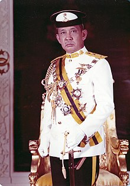
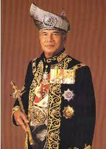
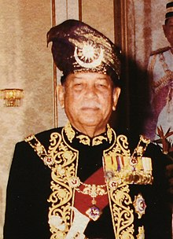
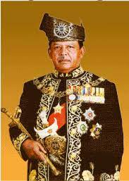
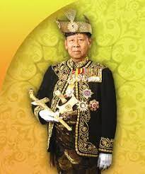
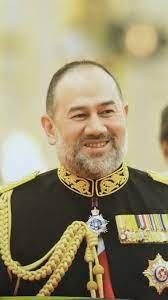
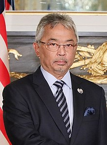

Sultan Iskandar Ibni Almarhum Sultan Ismail (Jawi: المتوكل على ﷲ سلطان إسكندر الحاج ابن المرحوم سلطان إسماعيل الخالدي; 8 April 1932 – 22 January 2010) was the 24th Sultan of Johor and the 4th Sultan of Modern Johor.[ε] He succeeded his father Sultan Ismail upon the latter's death on 10 May 1981. He was the eighth Yang di-Pertuan Agong (Supreme King or High King) of Malaysia from 26 April 1984 to 25 April 1989. Sultan Iskandar's reign lasted for almost 29 years until his death in January 2010. His children are married into the different royal houses of Malaysia. His eldest daughter Tunku Kamariah, the Tengku Puan Laksamana, married the Tengku Laksamana of Selangor, Tengku Sulaiman Shah. His successor and eldest son Sultan Ibrahim married Raja Zarith Sofiah of the Perak Royal Family. His daughter Tunku Azizah Aminah Maimunah Iskandariah married the heir apparent of Pahang, now Sultan Abdullah. His younger son Tunku Abdul Majid married a member of the Kedah Royal Family, Tunku Teh Mazni.
As was the case with his grandfather, Sultan Ibrahim,[4] Sultan Iskandar's independent mindset resulted in strained relations with the Malaysian federal government on numerous occasions. This was more so during his days as the Yang di-Pertuan Agong,[5] whereby a number of notable public incidents involved Sultan Iskandar.[6] Nevertheless, Sultan Iskandar was reputed to show great concern to his subjects, and was held in high esteem by many of his subjects–particularly the Malays and Orang Aslis.[7] His time as the Sultan of Johor was marred by accusations of violence and brutality. Sultan Iskandar was notorious for his bad temper which often resulted in violent episodes of rage and brutality to members of his staff and the general public. The 1992 Gomez incident surrounding the Sultan eventually culminated in the removal of "legal immunity" for members of the royal family.
Sultan Iskandar is reputed to have been a staunch disciplinarian, with willingness to occasionally voice personal opinions on governmental issues. On the personal side, subjects who have personally approached the Sultan in his later years described him as a person with a warm[8] and generous personality.[9] However, past critics had also argued that Sultan Iskandar was a person with a turbulent temper.[10][11] These claims were made by citing records of past notorious incidents,[12] which include an experience of being disinherited from being the Tunku Mahkota of Johor (or Crown Prince in English) by his father, in 1961, as well as a series of alleged criminal acts occurring between the 1970s and the 1990s which were published in the press and provoked widespread moral outrage within the Malaysian public.
During his younger days as a prince,[15] Iskandar was commonly known by his first name, "Mahmood"[γ][16][17] or his full name "Mahmood Iskandar". He largely discontinued the use of his first name after he became Sultan in 1981,[18][ζ] although some people still referred to him by his full name on an occasional basis.
Personal life
In 1956, Mahmood married Josephine Ruby Trevorrow, from Cornwall, United Kingdom, with whom he had four children, including his successor, Ibrahim Ismail and the current queen of Malaysia, Azizah Aminah Maimunah Iskandariah. The marriage ended with divorce in 1962.[122] He remarried in 1961 – shortly before his divorce to Trevorrow, to Tengku Zanariah, who came from the Kelantan royal family. Tengku Zanariah had six children with the Sultan.[59] Analysts such as Kate Wharton have observed that any literal references to Trevorrow's association with Sultan Iskandar was carefully omitted in all official biographies.
He is involved in the 1988 Malaysian constitutional crisis[126] which the then prime minister Mahathir Mohamad used his 1992 Gomez beating incident as a leverage to hijack the Malaysian judiciary system by sacking the then Lord of President of the Federal Court of Malaysia (Now known as Chief Justice of Malaysia), Tun Haji Mohamed Salleh bin Abas in an effort to claim his political success.
In addition, he kept a large collection of pets, particularly peacocks, at his Istana Bukit Serene compound, where he lived with the Sultanah.[8][9] In his youth, Iskandar resided at Istana Bukit Coombe, located at the top of Coombe Hill. It was built upon Dutch architectural designs, and was later renamed Istana Bukit skandar. The palace was later demolished in 1987, six years after Sultan Iskandar succeeded his late father as Sultan.
He made a personal friendship with Philippine opposition leader Benigno Aquino Jr. His son picked Aquino up at Changi airport and drove to Johor where he and Aquino had a meeting with the latter days before the former Philippine senator was assassinated.
Death
Sultan Iskandar died on 22 January 2010 at 7:15 pm at the Puteri Specialist Hospital, Johor Bahru. after being admitted earlier in the day following an illness at age 77.[129] His death was only officially announced at 11:20 pm by Menteri Besar of Johor Datuk Abdul Ghani Othman announced that flags be lowered to half mast Johor starting from 6:00 am to 6:00 pm. He was brought to the Istana Besar, Johor Bahru for laying in state and is buried in the Mahmoodiah Royal Mausoleum the next day at 2:00 pm. Before that, the public was allowed to pay their last respects to Sultan Iskandar from early morning.
Among the royal family were present and other dignitaries were present to give their last respects is the Yang Di-Pertuan Agong Tuanku Mizan Zainal Abidin and Raja Permaisuri Agong Tuanku Nur Zahirah, the Sultan of Brunei Sultan Hassanal Bolkiah, the Raja of Perlis Tuanku Syed Sirajuddin, the Sultan of Pahang Sultan Ahmad Shah, the Sultan of Kedah Sultan Abdul Halim Mu'adzam Shah, the Sultan of Perak Sultan Azlan Shah, the Sultan of Selangor Sultan Sharafuddin Idris Shah, the Yang Dipertuan Besar of Negeri Sembilan Tuanku Muhriz, the Regent of Perlis Tuanku Syed Faizuddin Putra Jamalullail, the Tengku Mahkota of Pahang Tengku Abdullah, and the Tengku Mahkota of Kelantan Tengku Muhammad Faris Petra. Prime Minister Dato' Seri Najib Tun Razak,[131] cut short his visit to India to attend his funeral. Also present were Singapore Prime Minister Lee Hsien Loong and Senior Minister Goh Chok Tong.
His son the Tunku Mahkota of Johor Tunku Ibrahim Ismail was proclaimed as the next Sultan of Johor also on 23 January.
|
 Iskandar of Johor
(1984-1989) |
Sultan Azlan Muhibbuddin Shah ibni Almarhum Sultan Yussuff Izzuddin Shah Ghafarullahu-lah (Jawi: سلطان ازلن محب الدين شاه ابن المرحوم سلطان يوسف عز الدين شاه غفر ﷲ له; 19 April 1928 – 28 May 2014) was the 34th Sultan of Perak and served as the ninth Yang di-Pertuan Agong of Malaysia from 26 April 1989 to 25 April 1994. The child of a royal father and commoner mother, he grew up in Perak, Malaysia. During school he played field hockey, subsequently playing for the Perak team. He trained to be a lawyer in the United Kingdom. Upon returning to Malaysia, he soon became a judge and quickly rose through the legal ranks. In 1965, he became the youngest person appointed to the High Court of Malaya, and in 1982 he became the youngest ever Lord President of the Federal Court, the country's highest judicial rank.
He succeeded as the Sultan of Perak after Sultan Idris Shah II, his first cousin once removed, died in 1984. Subsequently, he was elected to be the Yang di-Pertuan Agong of Malaysia in 1989, serving a five-year term before returning to his post as Sultan of Perak. In 2009, he exercised his royal authority to prevent the dissolution of the Perak State Legislative Assembly, sparking a constitutional crisis. Ultimately, the legal system ruled Sultan Azlan had acted properly.
During his career, Sultan Azlan Shah was awarded more than 3 dozen Malaysian and foreign honours. Dozens of buildings and other projects were named after him, including a genus of insects. He was known as the "Father of Malaysian Hockey" for furthering field hockey at home and abroad, and was the patron of dozens of organisations. With his wife Tuanku Bainun Binti Mohd Ali, Sultan Azlan had five children.
Royal family
Sultan Azlan Shah married Bainun binti Mohd Ali on 9 December 1955. She is styled as Her Royal Highness The Raja Permaisuri (Queen Consort) of Perak, Tuanku Bainun Binti Mohd. Ali, D.K., D.M.N. The couple had five children, two princes and three princesses. The eldest is Raja Nazrin Shah, who is now the current Sultan of Perak. The others are Raja Azureen, Raja Ashman Shah, Raja Eleena and Raja Yong Sofia. Raja Ashman Shah died on 30 March 2012 of asthma attack.
Death
Sultan Azlan Shah died on 28 May 2014 at 1:30 pm at the National Heart Institute, Kuala Lumpur at aged 86. He was posthumously titled as Marhum Al-Maghfur-Lah. He was laid to rest next to grave of the previous ruler, Sultan Idris Shah at the Al-Ghufran Royal Mausoleum at Ubudiah Mosque, Kuala Kangsar, Perak after Asar prayers on 29 May, and the proclamation of a new Sultan was announced on 29 May.[7] Upon his death, a public holiday was announced in the state of Perak for 29 May so that the population could pay their last respects to him at Kuala Kangsar. Menteri Besar of Perak Datuk Seri Zambry Abdul Kadir announced that the Malaysian flag would fly at half-mast for 7 days, and the Perak flag for 100 days. In addition, "all entertainment and celebrations" were cancelled to show respect for the Sultan.[4] He is survived by his wife Tuanku Bainun, and his four children; Raja Nazrin Shah, Raja Dato' Seri Azureen, Raja Dato' Seri Eleena and Raja Dato' Seri Yong Sofia. Their second son, Raja Dato' Seri Ashman Shah predeceased him in 2012 due to asthma attack.
|
 Sultan Azlan Muhibbuddin Shah ibni Almarhum Sultan Yussuff Izzuddin Shah Ghafarullahu-lah
(1989-1994) |
Tuanku Ja’afar ibni Almarhum Tuanku Abdul Rahman GCB (Jawi: توانكو جعفر ابن المرحوم توانكو عبدالرحمن; 19 July 1922 – 27 December 2008) was the tenth Yang di-Pertuan Agong (King) of Malaysia from 26 April 1994 until 25 April 1999 and the tenth Yang Di-Pertuan Besar (Ruler) of Negeri Sembilan.
Issue
Tuanku Ja'afar married Tuanku Najihah binti Almarhum Tunku Besar Burhanuddin of Negeri Sembilan in 1942 until his death in 2008, who also served as his Raja Permaisuri Agong between 1994 and 1999. They had issue, 3 sons and 3 daughters:
- Tunku Dara Negeri Sembilan Tunku Tan Sri Naquiah binti Almarhum Tuanku Ja'afar (b. 1944)
- Tunku Laksamana Negeri Sembilan Tunku Dato' Seri Utama Naquiyuddin ibni Almarhum Tuanku Ja'afar (b. 1947)
- Tunku Muda Serting Negeri Sembilan Tunku Tan Sri Dato' Seri Imran ibni Almarhum Tuanku Ja'afar (b. 1948)
- Tunku Puteri Negeri Sembilan Tunku Puan Sri Dato' Seri Jawahir binti Almarhum Tuanku Ja'afar (b. 1952)
- Tengku Puan Panglima Raja Selangor Tunku Dato' Seri Irinah binti Almarhum Tuanku Jaafar (b. 1957)
- Tunku Panglima Besar Negeri Sembilan Tunku Dato' Seri Nadzaruddin ibni Almarhum Tuanku Ja'afar (b. 1959)
Hobbies
Tuanku Ja'afar had a passion for sports, especially golf and cricket. He was a painter.
Death
Tuanku Ja'afar died on 27 December 2008 at Hospital Tuanku Ja'afar, Seremban from a stroke. He was 86 years old.[2] His younger brother, Tunku Panglima Besar Tunku Tan Sri Abdullah had died four months earlier. Before Tuanku Ja'afar's death, he was admitted to the hospital after feeling dizziness. He was buried at the Seri Menanti Royal Mausoleum at Seri Menanti on 29 December 2008.
|
 Ja'afar of Negeri Sembilan
(1994-1999) |
ultan Salahuddin Abdul Aziz Shah Al-Haj ibni Almarhum Sultan Hisamuddin Alam Shah Al-Haj (Jawi: سلطان صلاح الدين عبدالعزيز شاه الحاج إبن المرحوم سلطان حسام الدين عالم شاه الحاج; 8 March 1926 – 21 November 2001) was the 11th Yang di-Pertuan Agong of Malaysia and eighth Sultan of Selangor.
Personal life
Sultan Salahuddin Abdul Aziz Shah married at least four wives.
His first wife and cousin, HRH Paduka Bonda Raja Raja Nur Saidatul Ihsan binti Al Marhum Raja Bendahara Tengku Badar Shah, whom he later divorced, bore:
- Tengku Nor Halija
- Tengku Idris Shah, later Sultan Sharafuddin Idris Shah
- Tengku Puteri Sofiah (died 8 June 2017)
- Tengku Laksamana Tengku Sulaiman Shah
- Tengku Puteri Zahariah (Ku Yah)
- Tengku Fatimah
- Tengku Panglima Besar Tengku Abdul Samad
- Tengku Puteri Arafiah
- Tengku Puteri Aishah (died 30 July 2012)
Che Maheram binti Muhammad Rais, his second wife, bore him:
- Tengku Panglima Raja Tengku Ahmad Shah
His royal consort, Tengku Ampuan Rahimah binti Sultan Abdul Aziz Shah of the Langkat royal family in Sumatra died in 1993 before his election as Yang di-Pertuan Agong. She was the mother of:
- Tengku Puteri Nor Marina
- Tengku Puteri Nor Zehan
His last wife, commoner Tuanku Siti Aishah binti Abdul Rahman, served as his Raja Permaisuri Agong. Being fifty years younger than him, she was also the youngest ever occupant of that office – only 29 at her succession to the throne.
|
 Salahuddin of Selangor Salahuddin of Selangor
(1999-2001) |
Tuanku Syed Sirajuddin ibni Almarhum Tuanku Syed Putra Jamalullail (Jawi: توانكو سيد سراج الدين ابن المرحوم توانكو سيد ڤوترا جمال الليل; born 17 May 1943) is the 7th and current Raja of Perlis, reigning since 17 April 2000. He served as the 12th Yang di-Pertuan Agong of Malaysia from 13 December 2001 to 12 December 2006.
Personal life
On 15 February 1967 he married Tengku Fauziah binti Almarhum Tengku Abdul Rashid D.K., S.S.P.J., S.P.M.P. (born 6 June 1946) at Kota Bharu, Kelantan, daughter of Tengku Temenggong Tengku Abdul Rashid ibni Almarhum Sultan Sulaiman Badrul Alam Shah of Terengganu, by his wife Tengku Maharani Putri Tengku Kembang Puteri binti Almarhum Sultan Ibrahim of Kelantan, who became the Raja Puan Muda of Perlis. Tuanku Syed Sirajuddin was appointed for the first time as the Regent of Perlis when the Raja of Perlis and the Raja Perempuan of Perlis travelled to the United States and Europe from 23 June 1967 until 24 October 1967.
Tuanku Syed Sirajuddin has one son and one daughter :
- His Royal Highness Tuanku Syed Faizuddin Putra, Raja Muda of Perlis (born on 30 December 1967)
- Her Highness Sharifah Fazira, Tengku Puteri Mahkota of Perlis (born on 5 June 1973).
Tuanku Syed Sirajuddin has travelled to many countries including United Kingdom, France, Germany, Denmark, Austria, Italy, Switzerland, Egypt, Spain, Libya, the Netherlands, Belgium, Thailand and Saudi Arabia.
Tuanku Syed Sirajuddin is also active in sports. Among his favourite sports are golf, tennis, football and is a fan of Tottenham Hotspur football club. He has been the Chairman of Putra Golf Club, Perlis since May 1971, and the patron of the Association of Football Referees of Perlis since 1967. He was also the Chairman of the Football Association of Perlis for 18 years.
|
 Sirajuddin of Perlis
(2001-2006) |
Al-Wathiqu Billah Sultan Mizan Zainal Abidin ibni Almarhum Sultan Mahmud Al-Muktafi Billah Shah (Jawi: الواثق بالله سلطان ميزان زين العابدين ابن المرحوم سلطان محمود المکتفي بالله شاه; born 22 January 1962) is the 18th and current Sultan of Terengganu. He served as the 13th Yang di-Pertuan Agong, the constitutional monarch of Malaysia, from 2006 to 2011. He is Malay by ethnicity and an adherent of Sunni Islam.
Marriage and family
Mizan married Sultanah Nur Zahirah on 28 March 1996 in Kuala Terengganu. She is the second Raja Permaisuri Agong (Queen of Malaysia) to habitually wear the hijab (ritual Islamic headscarf for women), and the third to have been born a commoner.
The royal couple has two sons and two daughters:
- Her Highness Tengku Nadhirah Zaharah, the Tengku Puteri Utama Raja (b. 18 December 1996)
- His Royal Highness Tengku Muhammad Ismail, the Crown Prince (b. 1 March 1998)
- His Highness Tengku Muhammad Mua′az, the Tengku Sri Setia Mahkota Raja (b. 22 December 2000)
- Her Highness Tengku Fatimatuz Zahra, the Tengku Puteri Daulath Raja (b. 19 April 2002)
After Sultan Mizan was elected as Yang di-Pertuan Agong, he appointed Tengku Muhammad Ismail, then aged eight, as Regent on 12 November 2006.[8] Because of Tengku Muhammad Ismail's young age, a three-member Regency Advisory Council was established to discharge his duties for him. The council's members were Tengku Baderulzaman, Sultan Mizan's younger brother, Tengku Sulaiman Ismail, Sultan Mizan's uncle, and former Federal Court judge Dato' Abdul Kadir Sulaiman. He was proclaimed as regent during a ceremony on 12 December.
Upon reaching Mukallaf (13 years of age), the Islamic age of responsibility, and according to Shariah law and the constitution of Terengganu, Tengku Muhammad Ismail became able to discharge his duties himself. However, the Sultan formed another council, Majlis Perwakilan Pemangku Raja, to perform the Regent’s duty while he was away from Terengganu pursuing his studies. This second and current council is headed by Tengku Mustafa Kamel, another of Sultan Mizan’s younger brothers, together with former Regency Advisory Council members Tengku Sri Laksamana Raja Tengku Sulaiman Ismail and Dato' Haji Abdul Kadir Sulaiman.
During his younger days, Sultan Mizan was a keen footballer. He is currently active in golf, endurance riding and scuba diving. In addition, the Global Taekwondo Federation (GTF) awarded Mizan an Honorary 7th Degree Black Belt in recognition of his active participation in the sport.
|
 Mizan Zainal Abidin of Terengganu Mizan Zainal Abidin of Terengganu
(2006-2011) |
1
Sultan Sir Badlishah ibni Almarhum Sultan Abdul Hamid Halim Shah KCMG KBE (17 March 1894 – 13 July 1958) was the 27th Sultan of Kedah, a present Malaysian state, between 1943 and 1958. He succeeded the throne upon the death of his father, Sultan Abdul Hamid Halim Shah. He was the elder half brother of the first Prime Minister of Malaysia, Tunku Abdul Rahman.
Sultan Badlishah also served as regent of Kedah between 1937 and 1943. In 1943, he was deposed by the Imperial Japanese Army, but was reinstated following their surrender and the end of the Japanese occupation of Malaya in 1945.
Family
Sultan Badlishah was married twice. His first marriage was to Tunku Sofiah binti Almarhum Tunku Mahmud (born 1899) in 1922. The marriage produced an heir, who was the fifth and fourteenth King of Malaysia and the Sultan of Kedah, Sultan Abdul Halim Mu'adzam Shah. Tunku Sofia died in 1934 caused by an automobile accident.
- Tunku Abdul Hamid (born 20 August 1923, died young)
- Tunku Hamidah (22 September 1925 - 4 November 2015), married to Tengku Abdul Aziz Ibni Almarhum Sultan Sulaiman Badrul Alam Shah of Terengganu
- Tuanku Abdul Halim (28 November 1927 - 11 September 2017) - Sultan of Kedah from 1958 to 2017 and twice Yang di-Pertuan Agong from 1970 to 1975 and from 2011 to 2016
- Tunku Abdul Malik (24 September 1929 - 29 November 2015), Raja Muda from 1960 to 2015
- Tunku Sakinah (born 11 November 1931), married (div.) to Yves Borotra, son of the French tennis champion cum businessman, Jean Borotra.
- Tunku Mansur (29 December 1933 - 18 August 1934)
Sultan Badlishah's second marriage in 1934 was to Tunku Asma binti Almarhum Sultan Badrul Alam Shah (1911-1994), a Terengganu princess of the Bendahara dynasty. She served as Sultanah of Kedah and gave birth to a number of children:
- Tunku Hosna (born 25 January 1935)
- Tunku Annuar (30 June 1937 - 21 May 2014)
- Tuanku Sallehuddin (born 30 April 1942) - Sultan of Kedah from September 2017 onwards, Raja Muda from 2015 to 2017
- Tunku Bisharah (born 18 October 1944)
- Tunku Kamaliah (born 6 June 1947)
- Tunku Badriatul Jamal (born 1 September 1949)
- Tunku Abdul Hamid Thani (born 18 June 1952) - father of Tengku Jonaris Badlishah
- Tunku Nafisah (born 20 June 1954)
Death and succession
Sultan Badlishah died on 13 July 1958 and was succeeded by his son, Sultan Abdul Halim Mu'adzam Shah.
|
 Sultan Badlishah ibni al-Marhum Sultan Abdul Hamid Halim Shah
(2011-2016) |
Sultan Muhammad V (Jawi: سلطان محمد ٥; born 6 October 1969) has reigned as the 29th Sultan of Kelantan since September 2010 and served as the 15th Yang di-Pertuan Agong of Malaysia from December 2016 until his abdication in January 2019. He was proclaimed Sultan of Kelantan on 13 September 2010, succeeding his father, Sultan Ismail Petra, who was deemed incapacitated by illness. Sultan Muhammad V was proclaimed Yang di-Pertuan Agong on 13 December 2016. He became the first Yang di-Pertuan Agong to abdicate from the federal throne, effective 6 January 2019.
Personal life
On 15 November 2004, Sultan Muhammad V (the then Tengku Mahkota) married Tengku Zubaidah binti Tengku Norudin bin Tengku Muda (née Kangsadal Pipitpakdee), a member of the Pattani royal family.[16] He divorced her in 2008, which resulted in her losing the privilege as Tengku Ampuan Mahkota of Kelantan.
He was the first Yang di-Pertuan Agong in Malaysian history to reign without a Raja Permaisuri Agong consort.
On 30 October 2010, he married Che Puan Nur Diana Petra Abdullah (née Yana Yakubka) and proclaimed her as the Sultanah of Kelantan on 2 August 2022, with the style Her Highness Sultanah Nur Diana Petra Abdullah.
In late November 2018, it was reported that while on leave from the country, Sultan Muhammad V had married former beauty pageant winner Oksana Voevodina in Barvikha, Russia.[19] However, the reported marriage in Moscow was in fact a party to enable Oksana Voevodina's friends and family to celebrate the couple's official Islamic wedding, which had taken place in private on the 7 June 2018, in Kota Bharu, Kelantan, Malaysia, following Oksana's conversion to Islam in April 2018.[20] There is no official record of a marriage in Russia. Voevodina won the Miss Moscow title in 2015. Media reported the birth of their son Tengku Ismail Leon Petra ibni Sultan Muhammad V on 21 May 2019.[1][2] On 1 July 2019, Sultan Muhammad V divorced her by a "talak tiga" or talaq baayin that is the irrevocable divorce and most severe divorce in Islam, after filing of documents at the Singapore Syariah Court earlier on 22 June.[21] On 6 September he acknowledged that the marriage did take place.
|
 Muhammad V of Kelantan
(2016-2019) |
Al-Sultan Abdullah Ri'ayatuddin Al-Mustafa Billah Shah ibni Almarhum Sultan Haji Ahmad Shah Al-Musta'in Billah (Jawi: السلطان عبدﷲ رعاية الدين المصطفى بالله شاه الحاج ابن المرحوم سلطان حاج أحمد شاه المستعين بالله; listen (help·info); born 30 July 1959) has reigned as the 16th Yang di-Pertuan Agong (King) of Malaysia and the 6th Sultan of Pahang since January 2019. He was proclaimed as sultan on 15 January 2019, succeeding his father, Sultan Ahmad Shah, whose abdication was decided at a Royal Council meeting on 11 January 2019.
On 24 January 2019, days after his accession to the throne of Pahang, he was elected as the 16th Yang di-Pertuan Agong, the head of state, of Malaysia,[4] and was sworn in on 31 January 2019. He was also a member of the FIFA Council from 2015 to 2019.[5] Abdullah had considerable involvement in the 2020–22 Malaysian political crisis.
Early life
Tengku Abdullah was born on 30 July 1959 at Istana Mangga Tunggal, Pekan, Pahang. He is the first son of Sultan Ahmad Shah of Pahang and Tengku Ampuan Afzan. He is the fourth child among eight siblings. His eldest sibling is Tengku Meriam.
Tengku Abdullah received his early education in Clifford School, Kuala Lipis in 1965. He continued his primary education in Sekolah Kebangsaan Ahmad, Pekan from 1966 to 1969 and St. Thomas Primary School and his secondary education in St. Thomas Secondary School from 1970 to 1974, both located in Kuantan. He went to Aldenham School, Elstree, Hertfordshire, UK – Advance School from 1975 to 1977. He also attended The Royal Military Academy Sandhurst, United Kingdom from 1978 to 1979 as well as Worcester College Oxford and Queen Elizabeth College, United Kingdom from 1980 to 1981 graduating with a Diploma in International Relations and Diplomacy.
Family
His first marriage was to Tunku Azizah Aminah Maimunah Iskandariah binti Almarhum Al-Mutawakkil Alallah Sultan Iskandar Al-Haj, at the Sultan Abu Bakar State Mosque, Johor Bahru, on 6 March 1986. She is the third daughter of Sultan Iskandar of Johor by his first wife, Enche' Besar Kalsom binti Abdullah (née Josephine Ruby Trevorrow). Azizah has now thus been titled Tengku Ampuan Pahang (Queen Consort of Pahang) in addition to her Johor title of Paduka Puteri in 1986. She is the younger sister of the current Sultan of Johor, Sultan Ibrahim ibni Almarhum Sultan Iskandar. They have four sons and two daughters together.
His second marriage was in 1991 to Julia Rais (born at Kota Bharu, Kelantan, 19 February 1971 (age 51), a former actress and daughter of Abdul Rais, in a private ceremony at Fraser's Hill in 1991.[38] They have three daughters together.
|
 Abdullah of Pahang
(2019-present) |